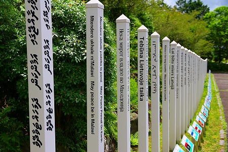

ピースポールの聖地/静岡県
読者諸氏はピースポールをご存知であろうか。
よく街角や観光地に建っている「世界人類が平和でありますように」と書かれた白い角柱のことだ。
ホラ、 こういうの。
このポールって日本全国津々浦々に存在しているので、ごくありふれた日常の風景に埋没してしまっているが、とある人物が提唱した平和運動の一環なのである。
そのお方の名は五井昌久氏。
国家や民族や宗教を越えて平和を祈るもので、現在では世界中に２０万本のピースポールが建立されているのだとか。
そのピースポールの聖地が静岡県富士宮市にあるのだ。
場所はあのオウム真理教のサティアン群があった所からもそう遠くはないエリア。
かつてはマスコミや警察が大挙したであろう辺りも今はひっそりと静まりかえり、のどかな牧草地帯が広がっている。
そんな富士西麓にある富士聖地に行ってみた。
入り口にはこの看板だけで他には何の説明もない。
知らない人はほぼ100％スルーしてしまうことだろう。
矢印に従って敷地内にお邪魔する。
聖地内の案内図。
ここは白光真宏会という新宗教の本部でもある。
「え、ピースポールって宗教とか関係ないんじゃないの？」と思われた方、鋭い！
この白光真宏会も五井昌久氏が創設した教団なのだ。
現在ピースポールの活動はWPPC（World Pace Prayer Society）という団体が運営しており、一応宗教法人としての白光真宏会とは別モノということになっているようだ。
まあ、両方とも代表者が同じ人ですし、双子の団体といっていいと思う。
この富士聖地は愛と平和と調和のみが語られてきた場所だという。
なので否定的な想いや発言はしてはならない。
…という趣旨だそうなので、郷に入っては郷に従え。私も聖地内ではネガティブな思考や言葉は一切封印させていただきました。
なので、以下文中でネガティブな感想があったとしてもそれは聖地の敷地から外へ出てからのものなので重々ご承知いただきたし。
案内図によると何やら東サイドが楽しそうなので歩を進める。
するとピースパスと呼ばれる道の両側にはずら〜りとピースポールが並んでいるではないか！
普段単品でしか見たことがないので、これだけの数が並ぶと圧巻だ。

しかも世界中の国名が記されているじゃあないか。
世界各国のピースポールにはそれぞれの国の言語と日本語で「○○国が平和でありますように」、裏には「世界人類が平和でありますように」と書かれている。
これまた普段日本語と英語バージョン程度しか見たことがない身としてはかなりびっくりした。
正確には数えなかったが恐らく世界中の国を網羅してるんだろうね。さっすが聖地。
ひとつひとつ見ているとリアルに問題を抱えている国名などもあり、そういったポールを見ると「うんうん、そうだよね、頑張れ！平和！」とか思ってしまうのであった。
ピースポールの列柱を抜けると、広大な広場に出る。
ここは各種行事が行われる屋外会場で、世界中の国旗が並んでいる。
恐らくこれも全世界の国旗が並んでいるのだろう。
さらに進むと愕の光景が。
地面にでかでかと文字が書かれている。
あまりにも巨大で読めなかったがMay Peace Prevail On Earth と書いてある。
その向こうには5メートルほどの大きな地球儀が。
もちろんその直下には巨大な「世界人類が平和でありますように」の文字が書かれている。
地球儀の手前には小振りのサッカーコートほどのエリアにミニサイズのピースポールが林立していた。
あ、コレは世界地図なのか！
人工芝が敷かれている部分が陸地。
チョット判りにくいがそれぞれの国にピースポールが立てられているのだ。
チョット墓標みたい…。
南北逆になってしまっているが、↓一際濃い緑に塗られているのが日本。判ります？
いつ頃つくられたものなのだろう？コンクリートに日々が入り、世界にヒビが入っていたぞ。
ちなみにこの巨大な「世界人類が〜」の文字の下には世界各国の国旗が記されたプレートが並んでいた。
何だろう、このスケールの大きさ。
勿論作り手の意図するところではなかろうが、こういうの見ると「地球を征服してやる〜、ワ〜ッハッハ！」的な昔のテレビ番組をどうしても思い出しちゃうねえ。
…というような事は勿論聖地の外で思ったことだよ。
地球儀の裏に回って少し小高いところから見てみたが、やっぱり全体像は掴めない。
辛うじて先ほどのMay Peace Prevail On Earthの文字が判読できた。
他国の人と仲良くね、とかいう生温いお題目ではなく、地球人として自覚せよ、と促されているような気分だ。
余りにも規模が大きくて全体像が掴めない。
でもそれで良いのかも。
世界は広大で全体など見渡せない、でもそこに世界は確実に存在するんだよ、的なことを表現しているのだろうから。
俯瞰するとこんな感じの位置関係になっている。
ついでに航空写真で見るとこんな感じ。
世界平和を祈る、という教義は今でこそ珍しくないかもしれない。
ただ、世界というものを国家の集合体であると定義し、具体的にイメージさせるのは極めて近代的な手法だと思う。
それまで日本の信仰風土において「世界」とは漠然とした存在で、精々世間様とか自分の周りの狭いコミュニティのことを指していたはず。
それを国名列記することで世界とは文字通り多数の民族や文化や宗教や言語を含んだ全世界のことなのだ、と意識させたかったのではなかろうか。
ただ、逆に言えば国の名前を唱えればその国の全てを理解できるかと言えば、コトはそんなに単純ではない。
例えば今のウクライナにとって平和であるとは何を意味するのだろう。
また、今の香港の騒ぎが沈静化すればそれは平和、と言うことになるのだろうか?
当該国のポールを建てたから問題解決！とせずに各国のそれぞれの事情を鑑みるのが肝要かと、他人事ながら偉そうに思ってしまってスミマセン、なのである。
われわれがこういう風に国家の集合体として世界を認識するのは精々オリンピックと万博くらいなものだ。
そういう意味でこのピースポール運動が起こった1970年代はまさにオリンピックと万博の熱が国内に充満していた頃といえよう。
そんな時代を象徴する運動だったのかもしれないな。
富士聖地の地図に不思議なモノがあるのを発見。
何だろう？富士山のミニチュアか？
正体を確かめるべく行ってみることにした。
道中にはこのような場所がいくつかあり、単なる休憩所かと思ったら物凄い高次元エネルギーが集中的に降り注いでいるところなのだとか。
スイマセン、小生鈍感なんで天からの高次元のエネルギーとか全然ワカリマセンでした。
そんな私でもコレを見た瞬間は高次元に興奮しましたよー。
円錐状のピラミッドである。
残念ながら中には入れなかったのだが、この外観だけで充分キテる。
防水シートのようなもので出来ているがその表面にはびっしり文字が印字されている。
東西南北にそれぞれ五井氏の思想が刻まれているのだ。
勿論、英語併記は標準装備。
このピラミッド、場所柄、富士山を摸しているのは間違いない。
世界の抽象化とこの場所の象徴化を同時に行う。そんな場所であったように思える。
青いピラミッドの向こうに富士山が見えるはずだが、この日は雲に覆われ、裾野しか見えなかったよ。
ちなみに本部脇の売店には世界人類が平和でありますようグッズが充実しているのでお忘れなきよう。
私はお土産にステッカーとボールペンをいっぱい買ったよ。
ただ、誰も喜んでくれないんだよなー。何でだろう…。
2012.04.
珍寺大道場 HOME